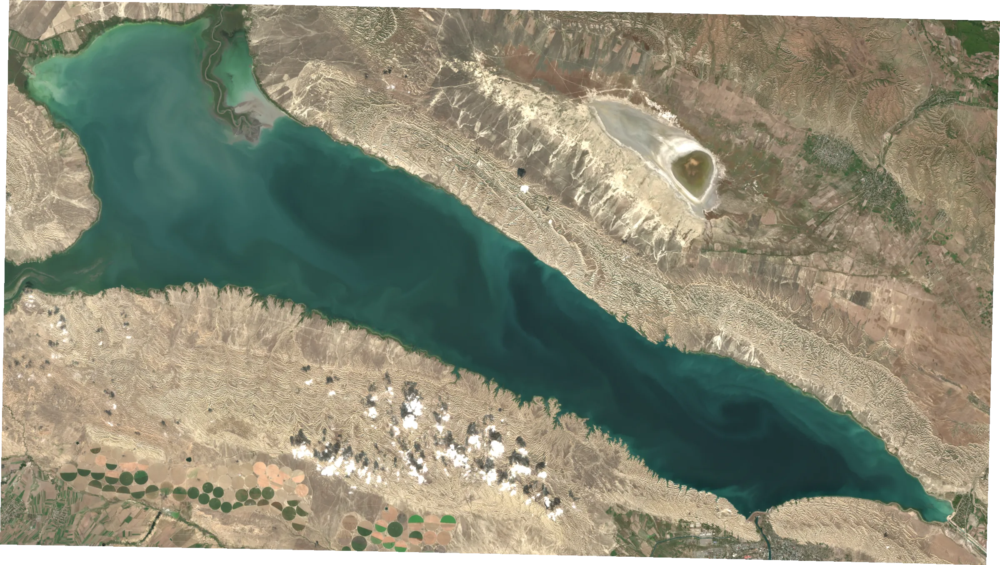

EARTH OBSERVATION / WATER RESOURCES
A clearer view
of changing water.
From the Caucasus to the world. Explore our water bodies, investigate shoreline change, and follow the evidence behind it.
Global satellite exploration.
In-depth radar analysis starts with Mingachevir.

A traceable interpretation.
A QUESTION, THEN THE EVIDENCE
What changed?
What could explain it?
Built for scientists, ecologists and water managers who need to see how a result was reached.
-
01
Find the water.
Browse lakes and reservoirs on a satellite map. Open a dated optical study or the Mingachevir radar investigation.
-
02
Follow the change.
Compare two radar dates. See water gain and loss in hectares, then cross-check against optical observations.
-
03
Make an informed call.
Inspect possible explanations and missing evidence. Record a human review with a reason and a next step.
IN THE FIELD OF VIEW / AZERBAIJAN
One reservoir.
A complete evidence trail.
Mingachevir · Loading observation dates…
Two-date research comparison. Provisional radar products; field validation is still needed.
BEYOND THE PILOT
A wider field of view.
Explore dated optical water-change studies across the Caucasus and beyond, alongside the Mingachevir radar pilot.
WATER RESOURCES / SATELLITE ATLAS
Choose a shoreline.
Explore the Caucasus and beyond. Each place has its own evidence.
Satellite basemap: © Esri, Maxar, Earthstar Geographics and the GIS community. Basemap imagery is for geographic context; it is not a dated radar comparison. Imagery source ↗
Mingachevir Reservoir
Azerbaijan / Water change investigation
Water changes.What does the evidence tell us?
Mingachevir Reservoir, Azerbaijan
Water change by sector
Select a sector to investigate its evidence.
-
01
Observe
View the radar and optical observations of the reservoir.
-
02
Compare
See where the water has changed between the two dates.
-
03
Explain
Interpret the change and review the evidence behind the result.
Two-date investigation. No forecasting or dam-safety claim.
Two-date research comparison. Hypotheses describe possible explanations; they do not establish causation.